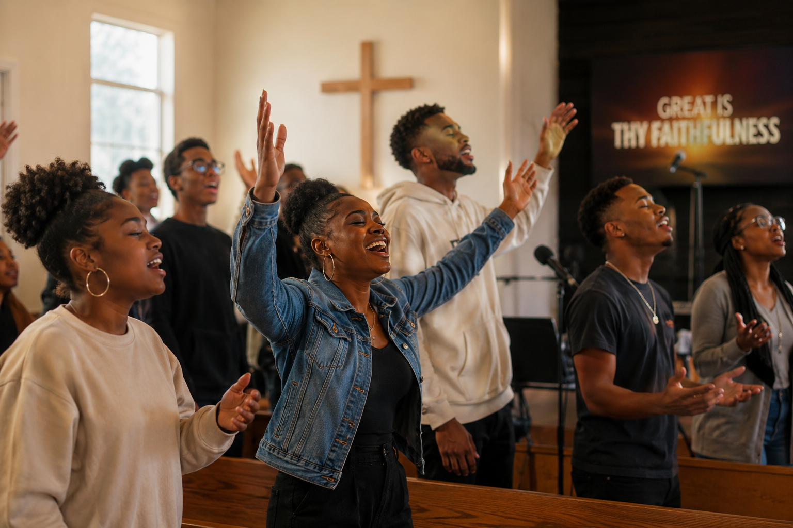
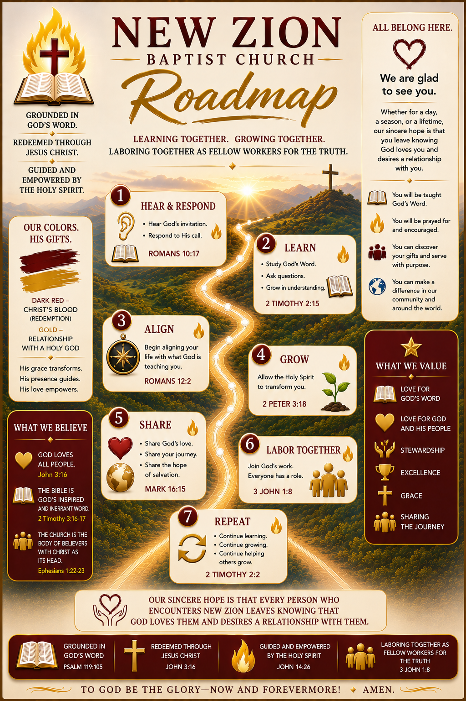

We are so glad you've decided to unite with New Zion Baptist Church. Here's everything that comes next, at your own pace.
What you just did was not paperwork. You told God, and this church, that you want to belong, not just attend. That's a meaningful step, and we don't take it lightly, and neither should you.
The Bible describes the local church as a family, a body, a household of faith, not a building you visit, but a people you belong to.
"For as in one body we have many members, and the members do not all have the same function, so we, though many, are one body in Christ, and individually members one of another."
Romans 12:4–5That means your presence here matters. Not as a spectator, but as a member of the body, with a real part to play.
Now that you know what this means, let's get you into our church family officially. Fill this out, and we'll take it from there.
New Zion isn't just a pastor and a pulpit, it's every person who walks through those doors. We'd love for you to actually get to know them, not just see a name on a bulletin.

Take a look through our family, faces and names, so the next time you're here, you're not just seeing strangers, you're seeing people you already know a little.
See the family directorySo they may grow in Christ, walk in truth, and help make disciples. Here's the fuller picture of what that looks like, and how you fit into it.

No rush, no deadline. Watch these whenever you're ready, in whatever order feels right.
What it means, biblically, to belong to Christ and to His church.
Foundations of Baptist faith and practice, with a look at other traditions.
Real, concrete ways to plug in, and opportunities already waiting for you.
Sunday Worship: 11:15 AM. Wednesday Bible Study: 7:00–8:00 PM, online via Zoom.
5400 Call Place SE, Washington, D.C. Street parking is available, and a step-free entrance too, just use it freely.
Absolutely, anytime. Sunday worship or Wednesday Bible Study are both easy, low-pressure ways for someone to see what New Zion is like.
Start with your own story. When it's time to explain the gospel itself, our Roman Road to Salvation page walks through it clearly, Scripture by Scripture.
Both are wonderful. We just want to see you regularly, whichever fits your season of life.
Visit giv.li/5e28vt or download the Givelify app and search New Zion Baptist Church.
No test, no pressure, just a quick note so we know you've made it through. We're cheering you on.
I'd love to hear from you personally, a question, an introduction, anything at all. This goes straight to me.